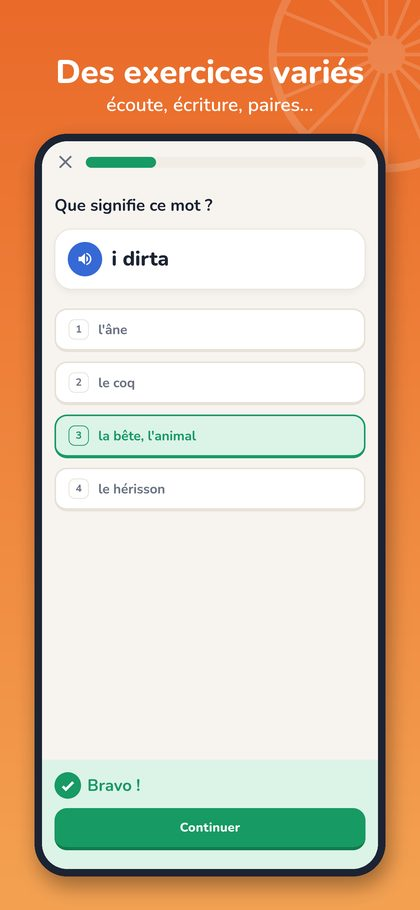
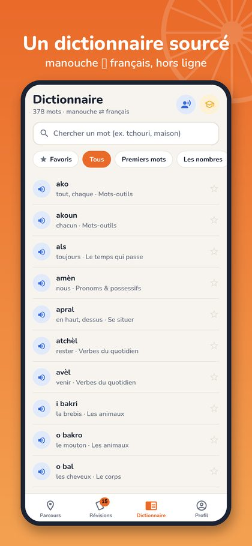
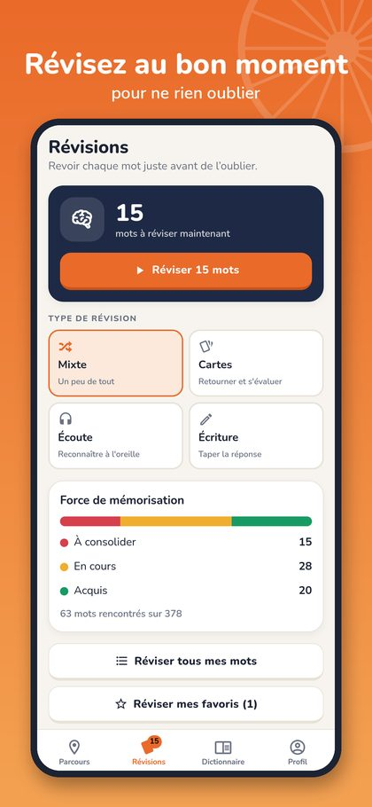
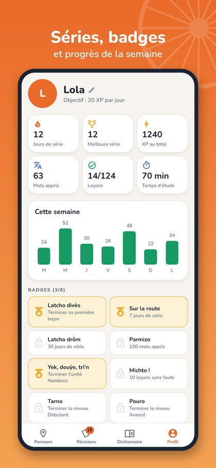

Apprenez le manouche en 5 minutes par jour.
Des leçons courtes, des dialogues du quotidien et des révisions qui reviennent au bon moment. Sans abonnement, sans publicité, sans connexion.
Pourquoi Rako ?
Le manouche et le romani se transmettent surtout à l'oral, en famille. Il existe très peu de supports simples pour les apprendre en français.
Transmettre
Donner à chacun, Manouche ou non, une porte d'entrée douce vers la langue : quelques minutes par jour, sans pression.
Rester fiable
Chaque mot est contrôlé dans une base de référence (ROMLEX, Université de Graz) et cite son entrée. Quand une forme est incertaine, nous ne l'inventons pas.
Respecter la diversité
Le romani est une famille de dialectes qui varient selon les familles et les régions. Rako les présente comme des variantes justes, pas comme des erreurs.
Deux parcours dans une seule application
Un menu « Manouche » pour apprendre pas à pas, un menu « Romani » pour comparer avec d'autres dialectes.
Menu Manouche
Le cours complet : 3 niveaux, leçons de 5 minutes, dialogues, 32 verbes conjugués, grammaire, prononciation, dictionnaire et révisions espacées.
Menu Romani
Près de 400 équivalents en kalderash, en arli du Kosovo et en romani de Slovaquie orientale : écoute, recherche, exercices dédiés, et lien vers la fiche du mot manouche.
Interface en romani
Au choix, salutations et encouragements en romani (« Gutamurja », « Mišto ! », « Lačho ! »). Les explications restent en français pour rester claires et exactes.
Une méthode simple, pensée pour durer
Comme pour les grandes applications de langues : petit à petit, chaque jour, sans pression.
Leçons de 5 minutes
Quelques mots nouveaux avec leur prononciation, puis des exercices variés : choix multiple, écoute, écriture, paires, phrases à remettre dans l'ordre.
Dialogues du quotidien
Saluer, passer à table, rentrer à la maison : complétez de courtes conversations.
Révisions intelligentes
Chaque mot revient juste avant que vous l'oubliiez (répétition espacée), en cartes, écoute ou écriture.
Dictionnaire intégré
Plus de 350 mots en 25 thèmes (menu Manouche), recherche manouche ⇄ français même sans accents, favoris.
Grammaire claire
32 verbes conjugués au présent, fiches de grammaire et guide de prononciation.
Motivant
Points, séries de jours, objectif quotidien, badges, rappel facultatif et mode sombre.
Aperçu
Une interface claire, pensée pour le téléphone.




D'où viennent les mots ?
Le manouche varie d'une famille et d'une région à l'autre. Rako s'appuie sur des sources ouvertes et cite l'entrée de chaque mot.
- Vocabulaire vérifié. Chaque mot est contrôlé dans ROMLEX, la base lexicale du romani de l'Université de Graz.
- Grammaire. Les terminaisons verbales suivent la description de Yaron Matras (Romani : A Linguistic Introduction).
- Prononciation. Une transcription à la française, facile à lire. La voix de synthèse est une approximation ; des enregistrements de locuteurs sont prévus.
- Relecture. Les phrases et dialogues sont composés pour l'application à partir de mots vérifiés ; une relecture par des locuteurs est encouragée. Vous voyez une erreur ou une autre forme dans votre famille ? Écrivez-nous.
Télécharger Rako
Application payante, achat unique : pas d'abonnement, pas de publicité, pas de compte. Disponible bientôt sur iPhone et Android.
Questions fréquentes
Faut-il une connexion internet ?
Non. Rako fonctionne 100 % hors ligne ; vos progrès restent sur votre téléphone.
Que faites-vous de mes données ?
Aucune n'est collectée. Lisez notre politique de confidentialité.
Y a-t-il un abonnement ou des achats intégrés ?
Non. Un seul achat, puis tout le contenu est à vous.
Quels dialectes du romani sont présents ?
Le cours principal est en manouche (sinto). Le menu Romani ajoute le kalderash, l'arli du Kosovo et le romani de Slovaquie orientale, avec seulement les équivalents confirmés dans ROMLEX. D'autres dialectes pourront suivre.
Est-ce du « vrai » manouche ?
C'est un manouche (sinto) de référence, vérifié dans des sources ouvertes. La langue varie selon les familles : d'autres formes sont tout aussi justes, et vos retours nous aident à les intégrer.